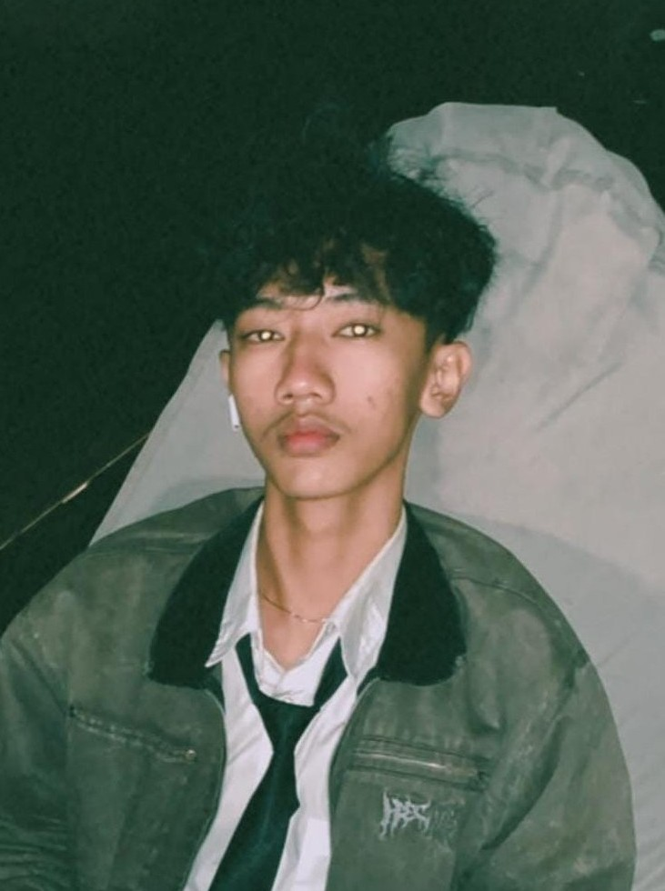

R

UI/UX Designer
Rizki Muta Ali
Mengubah ide yang berantakan menjadi antarmuka yang rapi dan enak dipakai. Percaya bahwa desain yang baik itu nyaris tak terasa.
“Sederhana itu butuh usaha ekstra.”
- Figma
- Riset Pengguna
- Prototyping
- Branding
☕ Fun fact: minum kopi 3 gelas sehari.